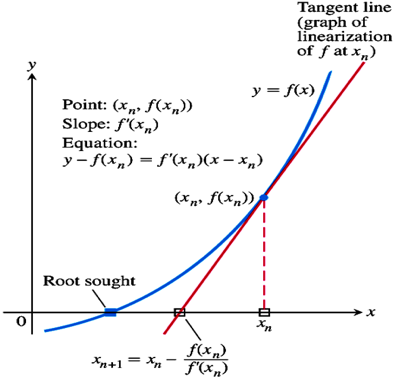

內部報酬率 (Internal Rate of Return，IRR)
內部報酬率是一種用來衡量投資效益的指標，其概念是計算出一個折現率，使淨資金流入的現值與淨資金流出的現值加總為 0，也就是淨現值為 0 (NPV=0)。
淨現值的數學公式如下:
NPV=t=0∑N(1+r)tCt
其中 r 是折現率、N 為期間、Ct 為第 t 年的淨現金流量。
當我們帶入一個 r 能使得 NPV=0 時，我們就把這個 r 稱 IRR。
一般來說我們可以使用插值法來計算 IRR，假設 r=5% 時 NPV > 0，r=6% 時 NPV < 0，那我們就能說 IRR 在 5%~6% 之間，可以用 Binary Search 的概念去實作，但這次我決定用點不一樣的。
牛頓法 (Newton’s method)
所謂的牛頓法是一種求解方程式 f(x)=0 的根的方法。我們把上面 NPV 公式裡的 r 換成 x，便可以把 NPV 視作 f(x) ，則 IRR 即是 f(x)=0 的根，因此牛頓法正好可以拿來求解 IRR。

我們讓 f(x) 對 xn 做偏微分得到一斜率，進一步計算出通過 xn 之切線，接著找到切線與 x 軸的交點 xn+1，其值為:
xn+1=xn−f′(xn)f(xn)
能發現 xn+1 相比於 xn 更靠近我們要求的根，因此我們能迭代的進行這個操作，直到 f(xn)=0，或者 abs(f(xn)−0)<tolerance。
Python 程式碼
首先是計算 NPV 的部分，這邊為了因應現金流不固定的情況所以會先計算每一期的 time_diff：
1
2
3
4
5
6
7
8
9
10
11
12
13
14
| from datetime import datetime
def npv_with_dates(cashflows, rate):
"""
Calculate NPV (with date)
:param cashflows: [(date 1, cash 1), (date 2, cash 2) ...]
:param rate: discount rate
:return: NPV
"""
npv = 0
for date, cashflow in cashflows:
time_diff = (date - cashflows[0][0]).days / 365.0
npv += cashflow / ((1 + rate) ** time_diff)
return npv
|
接著就是牛頓法的部分，給定一個初始的折現率開始迭代優化，derivative 是偏微分的結果：
1
2
3
4
5
6
7
8
9
10
11
12
13
14
15
16
17
18
19
20
| def irr_with_dates(cashflows, initial_rate=0.1, tolerance=1.0e-6, max_iter=100):
"""
Calculate IRR with Newton's method (with date)
:param cashflows: [(date 1, cash 1), (date 2, cash 2) ...]
:param initial_rate: initial discount rate
:param tolerance
:param max_iter: max iterations
:return: IRR
"""
rate = initial_rate
for _ in range(max_iter):
npv = npv_with_dates(cashflows, rate)
derivative = 0
for date, cashflow in cashflows:
time_diff = (date - cashflows[0][0]).days / 365.0
derivative += -time_diff * cashflow / ((1 + rate) ** (time_diff + 1))
rate -= npv / derivative
if abs(npv) < tolerance:
return rate
return None
|
執行程式碼：
1
2
3
4
| cashflows = [(datetime(2023, 1, 1), -100), (datetime(2023, 5, 1), 20), (datetime(2023, 9, 1), -10), (datetime(2024, 1, 1), 50), (datetime(2024, 3, 1), 70)]
irr_value = irr_with_dates(cashflows)
print(f"IRR: {irr_value*100:.2f} %")
|
參考資料
牛頓法 ( Newton’s Method )